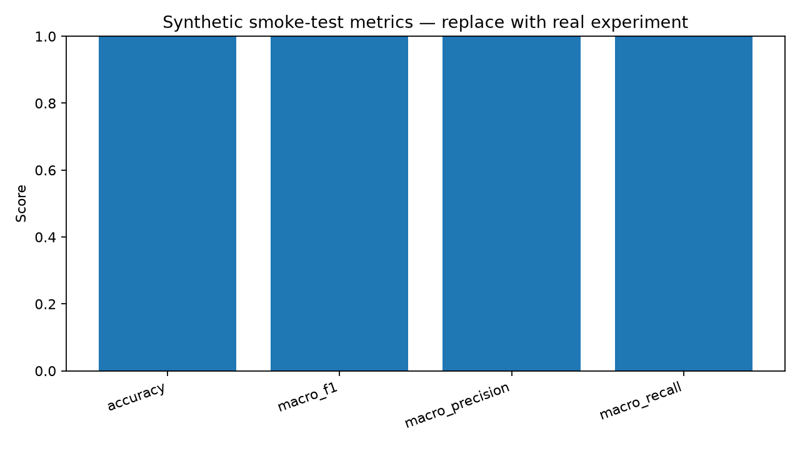

Demonstration only. This synthetic rule-based baseline exists to prove the repository workflow. Replace it with a real selected model, dataset, and evaluation.

| id | text | label | prediction |
|---|
Explain what the metric means, what it does not establish, and whether the test supports proceeding to a full benchmark.